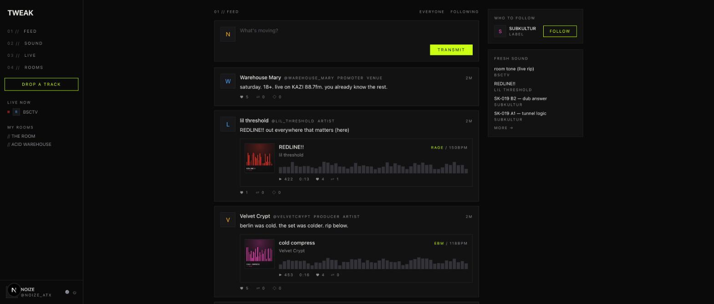
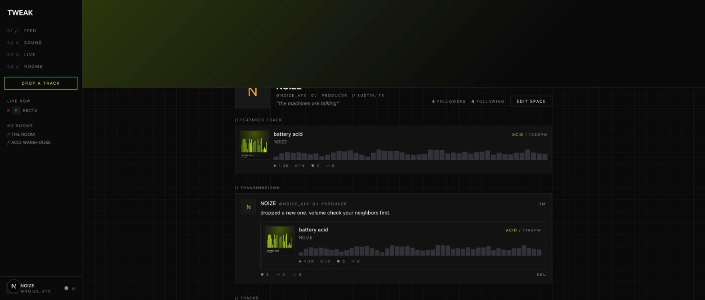
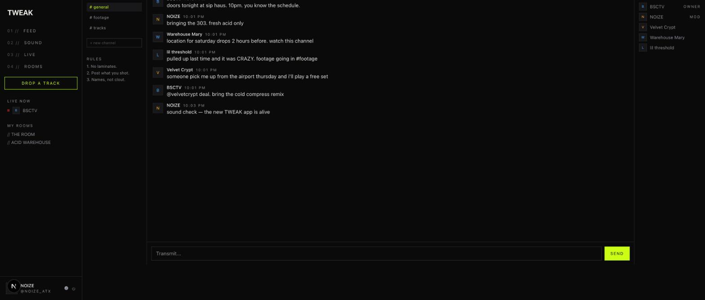
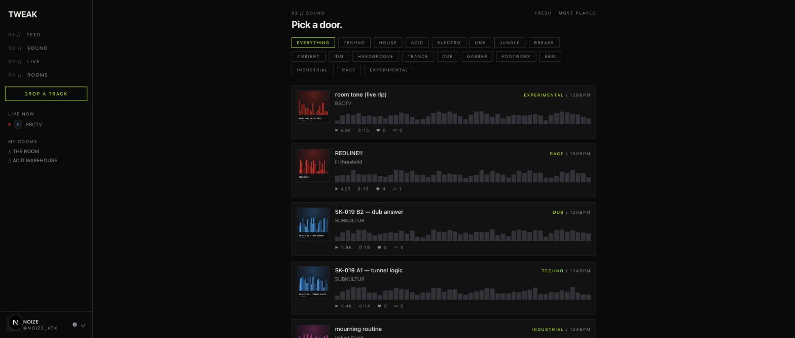

A home for the counterculture. Drop tracks, build your space, run your rooms, go live. Music first. Community second. Everybody has a name in here.
Track uploads, artwork, genre doors, persistent player with waveforms, likes & reposts.
MySpace-style profiles: accents, backgrounds, drag-and-drop sections, featured track, top friends.
Discord-style communities: channels, roles, private rooms with approval, live chat.
Twitch-inspired live status and live-now rail. Broadcast pipe is the next milestone.




git clone https://github.com/0xhellohttps/tweak && cd tweak npm install npm run db:push && npm run db:seed npm run dev # → http://localhost:3000 (demo login: noize_atx / tweaktweak)